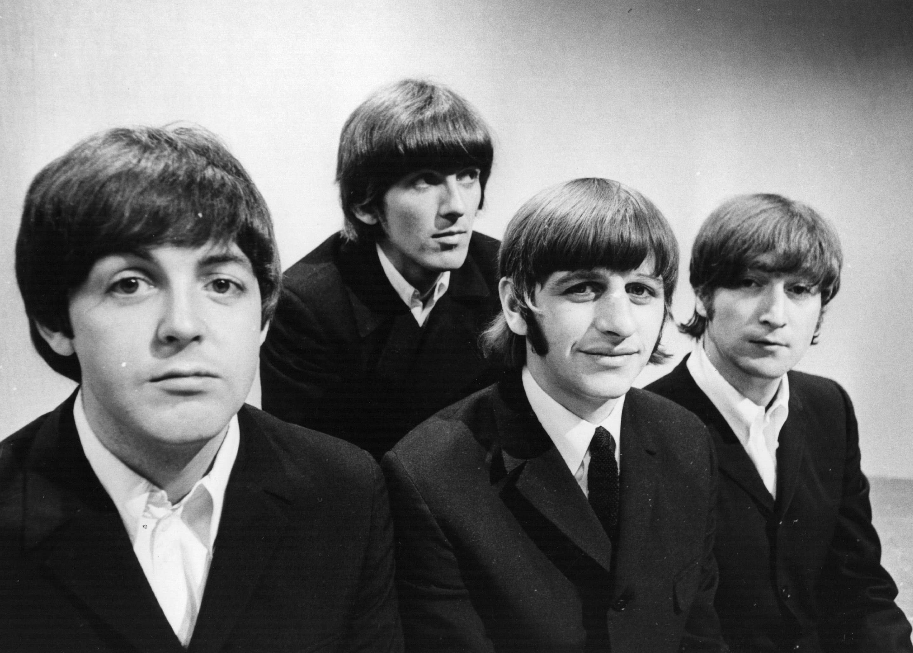

The Beatles; también conocida en el mundo hispano como los Beatles, fue una banda de rock británica formada en Liverpool durante los años 1960, estando integrada desde 1962 a su separación en 1970 por John Lennon, Paul McCartney, George Harrison y Ringo Starr. Es ampliamente considerada como la banda más influyente de todos los tiempos, siendo parte fundamental en el desarrollo del movimiento contracultural de la década de 1960 y el reconocimiento de la música popular como forma de arte. Enraizada en el skiffle, la música beat y el rock and roll de los años 1950, su sonido incorporaría a menudo elementos de la música clásica y del pop tradicional, entre otros, de forma innovadora en sus canciones; la banda posteriormente llegaría a trabajar con un extenso rango de estilos musicales, yendo desde las baladas y la música de India, hasta la psicodelia y el hard rock. Como pioneros en las formas de grabación, composición y presentación artística; la naturaleza de su enorme popularidad, que había emergido primeramente con la moda de la «beatlemanía», se transformó al tiempo que sus composiciones se volvieron más sofisticadas, revolucionando diversos aspectos de la industria musical y llegando a ser percibidos como la encarnación de los ideales progresistas de las juventudes de la época y sus movimientos sociales y culturales.

Liderados por la dupla Lennon-McCartney, construirían su reputación en la escena underground de Liverpool y Hamburgo sobre un período de tres años a partir de 1960, inicialmente con Stuart Sutcliffe en el bajo. El trío central de Lennon, McCartney y Harrison, juntos desde 1958 como parte de The Quarry Men, tocarían junto a múltiples baterías (incluido Pete Best) antes de pedirle a Richard Starkey, más conocido como Ringo Starr que se les uniera en 1962. Establecidos como un grupo profesional después de que Brian Epstein les ofreciera ser su representante, y con su potencial musical mejorado por la creatividad del productor George Martin, lograrían el éxito comercial en el Reino Unido a finales de 1962 con su primer sencillo, «Love Me Do». A partir de ahí, irían adquiriendo popularidad internacional a lo largo de los siguientes años, en los cuales harían un extenso número de giras hasta 1966, año en que cesaron la actividad en vivo para dedicarse únicamente a la grabación en el estudio hasta su disolución oficial en 1970. Después, todos sus integrantes se embarcaron en exitosas carreras independientes de diversa duración. Lennon sería asesinado, por Mark David Chapman, a las afueras de su casa de Nueva York en 1980, y Harrison fallecería de cáncer en 2001. McCartney y Starr, los dos miembros sobrevivientes, aún permanecen musicalmente activos.
Durante sus años de estudio crearon algunos de sus mejores materiales, incluyendo el álbum Sgt. Pepper's Lonely Hearts Club Band (1967), considerado por expertos como una obra maestra. Cinco décadas después de su separación, la música que crearon continúa siendo popular. Se mantienen como el grupo con más números uno en las listas británicas, situando más álbumes en esta posición que cualquier otra agrupación musical. De acuerdo con las certificaciones de la RIAA, han vendido más discos en los Estados Unidos que cualquier otro artista. Fueron galardonados con siete premios Grammy, y recibieron un total de quince premios Ivor Novello de parte de la British Academy of Songwriters, Composers and Authors. En 2004, la revista Rolling Stone los clasificó en el número uno en su lista de los «100 artistas más grandes de todos los tiempos». De acuerdo con la misma publicación, la música innovadora de The Beatles y su impacto ayudaron a definir tanto la cultura popular como la contracultura. En 2010, el canal de televisión especializado en música VH1 los clasificó en el número uno en su lista de los «100 artistas más grandes de todos los tiempos». También fueron colocados en el puesto número 1 por el sitio de Internet Acclaimed Music en su lista «The Top 1000 Artists of All Time». Figuran, asimismo, en la primera posición como los más grandes artistas de todos los tiempos de las listas Hot 100 y Billboard 200 en la clasificación de Billboard de 2015.